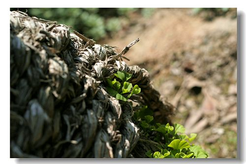
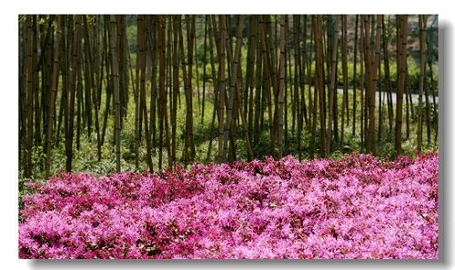
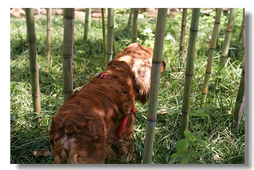
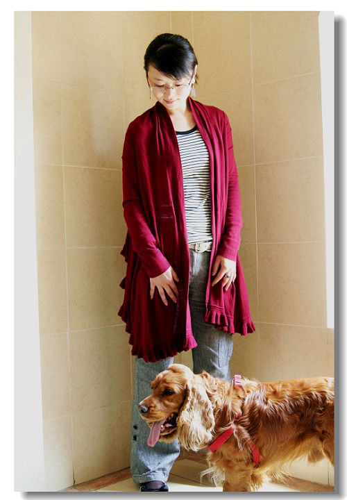

我有一片“明．媚” @ Apr 10, 2009
一朵赋有表情的花朵，有谁知道她的花名吗？

迎光的花瓣通体透明得动人。

四朵金花是一家。

最喜欢这张，象一块东方风格的花布，可以用它来做春天的衣裳。

阳光在细碎的叶片里荡漾。

无论给它一片沃土还是一节树桩，它都会迎着春风吐出新绿。

疯长的草与吹来的风。

缩小尺寸后损失了动人的细节。

竹林里有一只好奇的狗....

Enter with happy heart.

周末打算穿得随意些，晚上下班去浅尝一口想念的咖啡。

16 Responses to “我有一片“明．媚””
2009-04-10
天热了，狗狗伸舌头了 O(∩_∩)O哈哈~
2009-04-10
一幅春意昂然的样子.
那张luke在干吗
2009-04-10
它在竹林里上演《探宝奇缘》…..
2009-04-10
春天真美，人更美，呵呵
2009-04-10
好喜欢那片草
2009-04-10
有人说第一张的花名是“鸢尾花”，不知道对不对？
2009-04-10
很温暖的感觉，赞一个！不过这面墙快烙上你的印了，下次换背景啦。周末愉快！
2009-04-10
鸢尾花~~好象是法国的国花
2009-04-10
这是鸢尾属的蝴蝶花，也叫日本鸢尾。鸢尾花是蓝紫色的，花瓣型和这个不一样 ：P
2009-04-10
google了一下，的确鸢尾花是蓝紫色的：
问问真是博学呢：D谢谢！园子里拍到的这个是淡紫色的蝴蝶花（日本鸢尾）。
2009-04-10
日本鸢尾 Iris japonica Thunb.
鸢尾科 Iridaceae , 鸢尾属 Iris L.
又名蝴蝶花、蝴蝶兰，多年生草本。根茎匍匐状，有长分枝。叶多自根生，2列，剑形，扁平，先端渐尖，下部折合，上面深绿色，背面淡绿色，全缘，叶脉平行，中脉不显著，无叶柄。春季叶腋抽花茎；花多数，淡兰紫色，排列成稀疏的总状花序；小花基部有苞片，剑形，绿色；花被6枚，外轮倒卵形，先端微凹，边缘有细齿裂，近中央处隆起呈鸡冠状；内轮稍小，狭倒卵形，先端2裂，边缘有齿裂，斜上开放。花期4月-5月。蒴果长椭圆形，有6线棱；种子多数，圆形，黑色。原产我国长江以南广大地区，日本也有。耐荫，耐寒。散生于林下、溪旁阴湿处。园林中常栽在花坛或林中作地被植物。繁殖：分株或播种繁殖。管理：只要肥沃湿润的地方，较弱光照就会生长良好。保持土壤湿润即可。
鸢尾花语：绝望的爱；
白色鸢尾：纯真；
黄色鸢尾：友谊永固、热情开朗；
蓝色鸢尾：赞赏对方素雅大方或暗中仰慕；也有人认为是代表着宿命中的游离和破碎的激情，精致的美丽，可是易碎且易逝…
紫色鸢尾：爱意与吉祥
鸢尾爱丽斯（紫蓝色）：好消息、使者、想念你
德国鸢尾（深宝蓝色）：神圣
小鸢尾（明黄色）：协力抵挡、同心
鸢尾是属羊的人生命之花,代表着使人生更美好
2009-04-11
这个是凡高最爱的花Iris阿，有很多画有关这个了，加州常常路边可见。
2009-04-11
园子里谁养兰花的，交换一下心得啊
2009-04-11
茶问的这种花，跟四川这边叫扁竹花的植物很像很像。我怀疑就是一种植物（因为你拍的这个话的茎杆也是扁扁的）。小时候春游，都会采一大把扁竹花带回家。
2009-04-11
楼上的说的没错，四川这边很多，还有个更朴素的名儿叫“扁担花”，呵呵~~~
2009-04-11
扁竹花、映山红，小时候春游就喜欢折这两种花。
长大后知道映山红的学名就是杜鹃花，那么扁竹花的学名兴许就是日本鸢尾？
Leave A Reply
存档只读，评论已关闭。